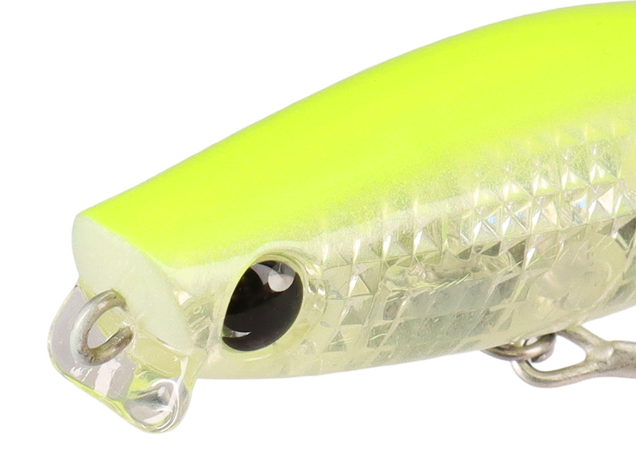
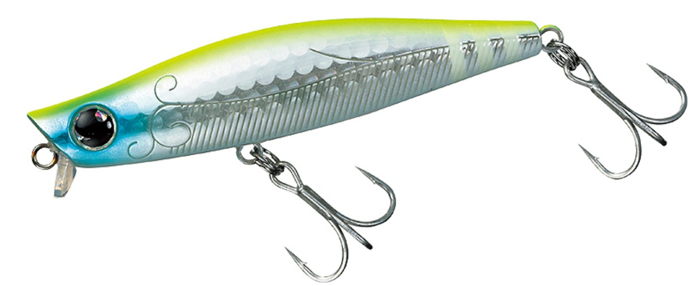
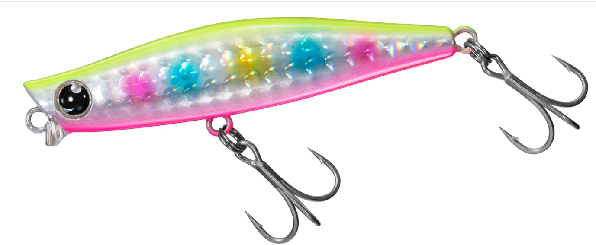
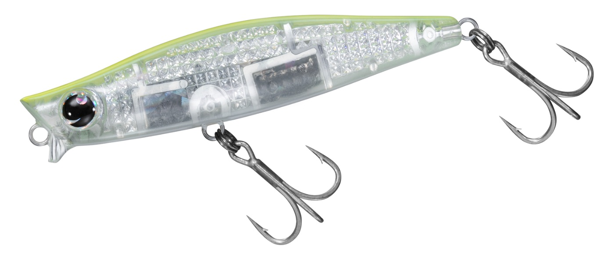
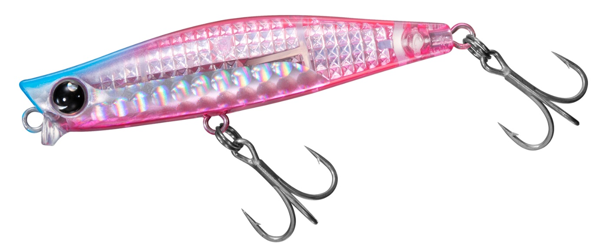

GALVA64S
ガルバ64SはDAIWAのシンキングシンキングペンシルです。
ガルバ64はシリーズで最も小さいサイズ。ガルバのレンジキープ力はそのままに食わせ能力アップ。

スペック
- メーカー
- DAIWA
- 長さ
- 64 mm
- 重さ
- 9.7 g
- フック
- #10×2
- リング
- #2
- レンジ
- 0-20 cm
- タイプ
- シンキングペンシル
- 沈下タイプ
- シンキング
- アクション
- ワイドスイングアクション
- ターゲット
- シーバス
- 価格
- 2100円(税抜)
- 発売日
- 2026年04月
- 開発者
- 大野ゆうき
ガルバ64Sの特徴
リップ付きシンペン最小サイズは食わせの鬼！
-
マイクロベイトに特化したシリーズ最小モデル
ガルバシリーズで最小となるモデル。春から夏にかけてのマイクロベイトパターンに最適。
-
リップ付き設計による悪条件下での安定性
リップ付きシンペンという独自形状で横風が強いにやコンディションが悪い日でもしっかり水をとらえ、水面直下のレンジを安定してトレース可能。
-
小型ながらに優れた飛距離
64mmという小粒かつ固定重心でもシリーズ共通の高い遠投性を維持し、広範囲の攻略が可能。
ガルバ64Sの使い方・得意な状況
ただ巻きで水面直下のレンジを安定してキープできます。
マイクロベイトパターンにマッチするので、春から夏にかけてのシーズンが最適。
飛距離も結構出るので、マイクロベイトパターンで、少し遠目にボイルが出ていても問題なく使用できます。
ワンポイント
「着水直後の食わせ」を意識する。
リップ付き設計のため、着水直後からしっかり水をとらえます。
そのため、他のシンペンではアクションが安定しにくい”巻きはじめ”からバイトを狙えるため、着水直後から気を抜かずにリトリーブしましょう。
画像出典:大野ゆうきTheard
人気カラー
ガルバ64はレーザーインパクト仕様も同時発売！
レーザーインパクトは光の乱反射により、自然の魚と同等のアピールをするDAIWAのイチオシシステムです。

レモンソーダミント大野ゆうきの代表カラー。思わず手に取ってしまうキュートなカラー。

不夜城ダイワといえばこのカラー。視認性、アピールともに抜群。

LIハッピーレモン大人気カラーがレーザーインパクト仕様に。人気No.1

LIブルピンミラーボール魚からの視認性が良いピンクにレーザーインパクトで光でもアピール。
画像出典:DAIWA公式HP
ガルバ64Sに似ているルアー
- GALVA 73S
- マリブ 68s
- グラバーHi 68S